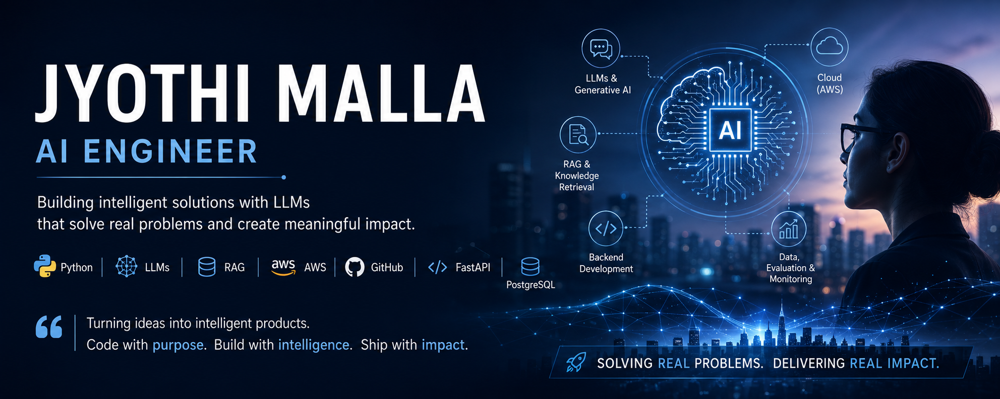

Hello! I'm Jyothi Malla, an AI researcher based in London, currently starting my PhD at Goldsmiths, University of London. My work sits at the intersection of Artificial Intelligence and healthcare — focused on Clinical Decision Support systems, predictive modelling and NLP for maternal and infant health equity.
I'm a researcher exploring how health data analytics, Machine Learning and Artificial Intelligence can address real-world healthcare challenges. My work spans predictive modelling, statistical analysis and natural language processing applied to large-scale clinical and epidemiological data, with a particular focus on early diagnosis, risk stratification and patient pathways in maternal and infant health.
My Master's dissertation on predictive modelling for patient readmission was referenced in a UK Parliament discussion on NHS wait-time planning — part of my MSc in Data Science (Distinction) at Goldsmiths. Building on that work, I'm now starting a PhD focused on developing AI-based Clinical Decision Support tools for maternal and infant health, addressing equity gaps through community health worker-centred frameworks.
Full-stack React/Vite CDS frontend comprising a midwife dashboard, patient detail views, assessment wizard and mother-facing view, backed by a FastAPI (Python) service for data ingestion, predictive scoring and clinical alerts, with a PostgreSQL/SQLAlchemy data layer and GitLab CI/CD.
MSc dissertation developing ML/NLP models on high-granularity clinical notes to predict hospital readmission risk. Cited in a UK Parliament discussion on NHS wait-time planning; research subsequently published peer-reviewed.
Email: mjyothionline@gmail.com
Social: LinkedIn | Google Scholar